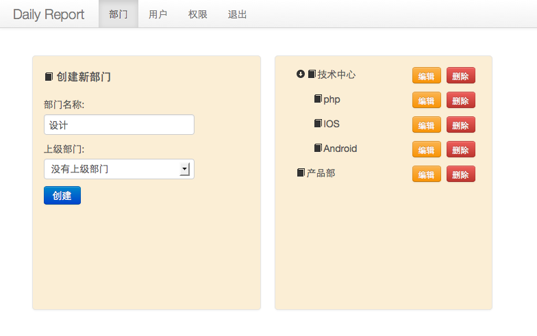
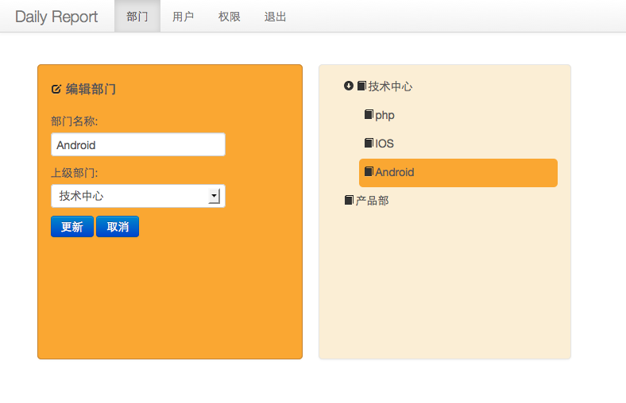
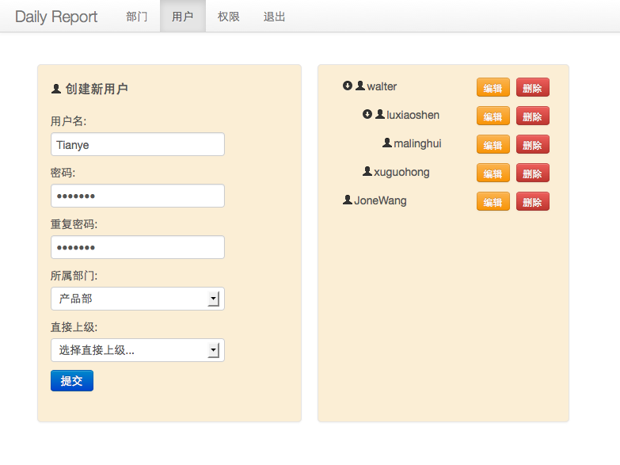

介绍
还在使用邮件或者word,excel之类的东西收发日报吗，太不方便了，赶快使用“一天”日报系统吧。
“一天”日报系统是一个开源的日报系统，该系统包含了网页版，安卓和Iphone版（开发中），均免费使用，该系统可以部署在自己公司的服务器上，这样公司员工可以在任何地点书写自己的日报和浏览日报。
“一天”日报系统提供了丰富的文字编辑能力，让你可以随心所欲的书写出各种格式的文本。日报会按照时间顺序归类在一起，方便你日后对以往工作的回顾。
{kind=link}
部门领导可以很方便的浏览自己下属的日报。
{kind=link}
创建部门

编辑部门

创建新用户

安装
安装redis数据库，安装完成后执行如下命令添加管理员账户：
redis 127.0.0.1:6379> incr next_user_id
(integer) 1
执行完该命令后表明 next_user_id 的值为1，然后执行如下命令（1:user_name和1:password中的1即为上一步执行incr next_user_id后的 next_user_id的值）
redis 127.0.0.1:6379> hmset users 1:user_name adminn 1:password 20eabe5d64b0e216796e834f52d61f
OK
执行下面的命令将管理员adminn的id添加到管理员集合中
redis 127.0.0.1:6379> sadd administrators 1
(integer) 1
执行完以上命令后我们新增加了一个管理员账户adminn,密码为1234567。
下载源代码并解压缩到你的网站根目录，使用命令行工具进入该目录，然后输入
$ npm install
安装依赖的库文件(确保你有管理员权限可以安装库文件），安装完成后，打开根目录下的config.js文件设置数据库信息和网站端口号。 exports.db对象是数据库配置，exports.sessiondb是seesion数据库的数据库配置，seesion信息都存在redis数据库中，exports.app 对象中的 port属性表示网站端口号，默认是80端口。配置设置好后执行
$ node app.js
看到输出'Express server listening on port '80' 则表示服务器启动成功（这里的端口号80会和你在config.js中的exports.app.port保持一致） 进入网站主页你会看到登陆界面，输入管理员账户名 adminn,密码1234567则可以登陆成功。 进入管理后台设置部门，然后建立新用户，把建立好的用户名和密码告知 用户，用户使用用户名和密码登陆系统就可以写日报和查看日报了。
支持和bug发送
有任何疑问和bug请发送到 walterribao@126.com邮箱